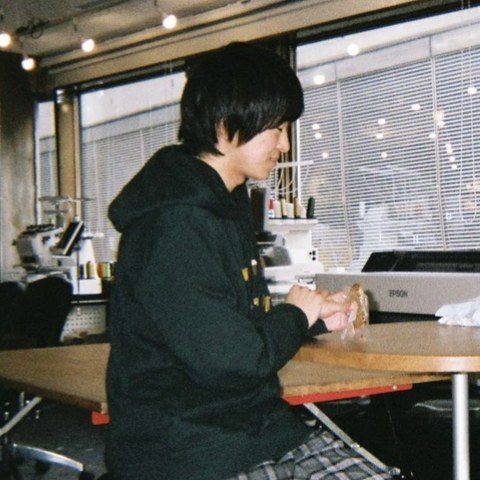

市川慧（東京科学大学 環境・社会理工学院）の個人サイトです。 オンライン上で不確実な情報が拡散される状況下で、人がどのように行動するのか、そして技術の導入によって人の行動・意思決定をどのように支援できるかを、 実験者実験や大規模データ解析を用いて研究しています。 特に画像を用いた偽・誤情報やインターネットミームを題材にこれらの研究を行っています。
何か気になる点や共同研究のご依頼などがありましたら、お気軽にご連絡ください.
最近の更新はありません.
Journal of Computational Social Science
arXiv preprint (arXiv:2609.35385)
arXiv preprint (arXiv:2610.00305)
arXiv preprint (arXiv:2609.34026)
Data-driven mathematical Sciences：経済物理学とその周辺 (2026年9月10日)
第121回 米国社会学会(ASA) 年次大会 (口頭発表)、New York City, USA
IC2S2 2026 (ポスター発表)、University of Vermont, Burlington, Vermont, USA
IC2S2 2026 (口頭発表)、University of Vermont, Burlington, Vermont, USA
第5回 計算社会科学会大会
HICSS-58, Hilton Waikoloa, Big Island, USA
IC2S2 2024, Philadelphia, USA
第38回 人工知能学会全国大会
東京工業大学
一般社団法人テクニカルディレクターズアソシエーション
運営メンバー
ユーザー調査法（東京工業大学）
研究に関するご質問や共同研究のご依頼など、お気軽にご連絡ください。